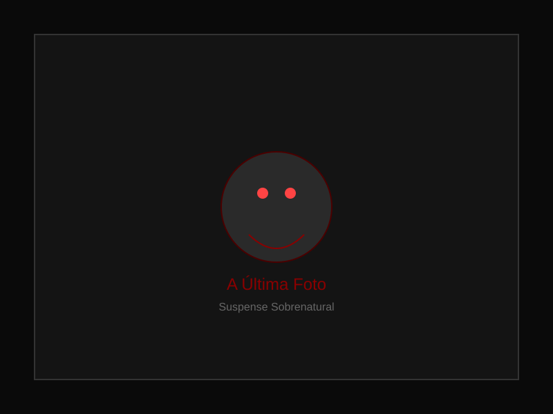

Miguel comprou a câmera polaroid em um brechó do interior. O dono, um senhor de mãos trêmulas, avisou: "Não tire fotos depois da meia-noite."
Miguel riu. Levou a câmera para casa, colocou na estante e esqueceu.
Até a noite em que não conseguiu dormir.
Era 0h13 quando ele apontou a câmera para o corredor vazio do apartamento. Clicou. O flash iluminou o corredor por um instante, e a foto começou a revelar.
Na imagem, o corredor estava vazio. Mas no fundo, na porta do quarto fechada, havia uma mão pálida pressionada contra a madeira, de dentro para fora.
Miguel gemeu, jogou a foto no lixo. Foi para a cozinha beber água. Quando voltou, a foto estava em cima da mesa.
Ele a rasgou em quatro pedaços. Jogou no vaso. Deu a descarga.
Às 2h47, o celular tocou. Não havia número. Quando atendeu, ouviu apenas respiração pesada do outro lado.
Foi então que viu: na tela do celular, a foto que ele havia rasgado. Agora, a mão do corredor estava mais próxima da porta. E alguém, do lado de fora do quadro, segurava a câmera apontada para ele.
O flash disparou sozinho.
Na nova foto, Miguel estava dormindo na cama. E no canto do quarto, uma figura com olhos muito largos o observava.
Espaço reservado para vídeo do conto. Adicione o arquivo em assets/video/ e descomente a tag <video> acima.